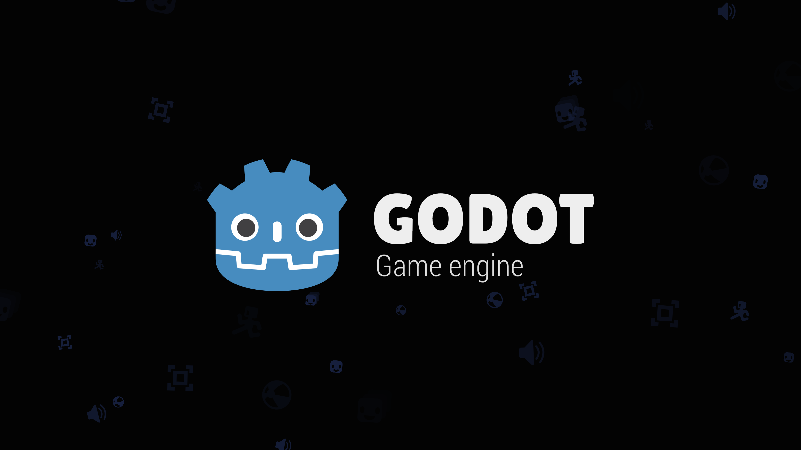

Godot's upstream gui/custom_splash_screen, title changed. The engine's own splash is hidden; a custom animated splash hands off to a placeholder main scene.
OBSERVED in code PROPOSED not in code MISSING intent nobody wrote down
A tech demo, not a game. No gate signed; splash pixels never looked at by a person.

OBSERVED godot/screenshots/custom_splash_screen.webp — upstream's image, retained. The Godot logo is not Walker branding (README).
load() not preload(), so the splash never waits. OBSERVED splash.gd:5-6→ GDD §3. Restart relaunches the process; nobody has pressed it in a test.
Runs the actual 4 s animation without seeking: settings, autoplay, hold, transparent overlay, automatic transition, old scene freed, main fade, overlay ignores input, Restart wired.
splash-20260926.log · state only. Particles, continuity, resize, relaunch: unverified.
PROPOSED H-01 frame-by-frame continuity · H-02 resize mid-splash · H-03 Restart in a disposable session
A splash is a cost the player pays every launch. Fine for a demo. If Walker means to reuse it, decide Q-04 and Q-05 before it goes anywhere else, and look at it before anyone says 'seamless'.